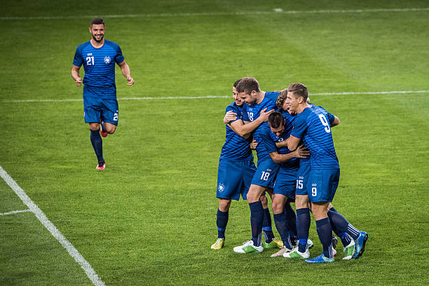

Matches News
Everton Take Surprise Victory
In an unexpected turn of events, Everton secured a thrilling 1-0 victory over Manchester United at Goodison Park. The match was marked by intense competition and standout performances. In the first half of the match Everton defender Idrissa Gueye was sent off after striking teamate Michal Keane. A very shocking scene and the first sedning off given to a player for delibertaly fouling a teamate
Barcelona Vs Chelsea outcome
In a highly anticipated Champions League clash, Barcelona and Chelsea battled to a 2-2 draw at the Camp Nou. Both teams showcased their attacking prowess, with Barcelona's Lionel Messi and Chelsea's Mason Mount each scoring a brace. The match was filled with dramatic moments, including a late equalizer from Chelsea that secured the draw. Fans were treated to an exhilarating display of skill and determination from both sides. In other matches this week, Real Madrid edged past Bayern Munich 3-2 in a nail-biting encounter, while Liverpool dominated Paris Saint-Germain with a convincing 4-1 victory. The Champions League continues to deliver thrilling action as teams vie for supremacy on the European stage.

Upset at the Craven Cottage
In a stunning upset at Craven Cottage, newly promoted Fulham defeated Premier League giants Liverpool 2-1. Fulham's tactical discipline and relentless energy paid off as they capitalized on Liverpool's defensive lapses. The victory marks Fulham's first win against a top-tier team in over a decade, igniting celebrations among their passionate fanbase. Liverpool, on the other hand, will need to regroup quickly as they face mounting pressure in the league standings.